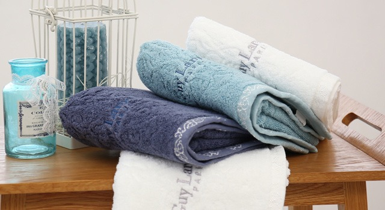
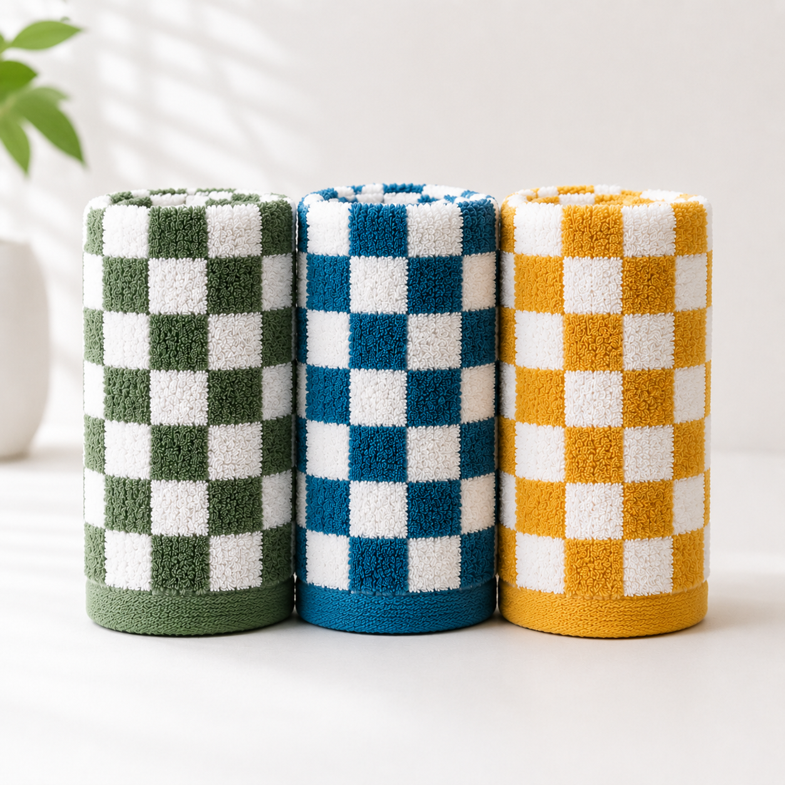

원단·스펙 백과사전
40수 코마사·뱀부·수피마
(주)수건메이커 원단 전문가 칼럼
피부 안 좋아지는 이유? 먼지 없는 호텔수건 고르는 법 (40수 코마사 vs 뱀부 타올 vs 수피마 완벽 비교)
핵심 3줄 요약 (실패 없는 프리미엄 수건 선택 공식)
- 40수 코마사 (가장 대중적인 호텔식 정석): 원사를 빗질(Combing)해 잔털을 없앤 170g~200g 타월로, 가정용 교체 및 고급 답례품으로 가장 만족도가 높습니다.
- 친환경 뱀부(대나무) 원사 (먼지 제로 & 실크 촉감): 면보다 섬유 표면이 매끄러워 먼지가 거의 나지 않으며 자연 항균·소취 기능까지 갖춰 영유아 가정과 선물용으로 최고입니다.
- 수피마(SUPIMA) 220g & 50수 브리즈 (최상위 하이엔드): 전 세계 면화 상위 1% 초장섬유(Extra Long Staple)로 제작되어 혼수, 어버이날, 스승의날 VIP 선물로 독보적입니다.


1. 수건 원사(소재) 4종 완벽 비교표
| 원사 종류 | 먼지 발생 | 촉감 및 흡수력 | 수건메이커 대표 상품 |
|---|---|---|---|
| 일반 30수 면사 | 보통 | 탄탄하고 건조가 빨라 운동·행사용에 적합 | 송월·충무 30수 130g~150g 데일리 타월 |
| 40수 코마사 (Combed) | 매우 적음 | 빗질 공정으로 잔털 제거, 도톰한 5성급 호텔 감촉 | 기라로쉬 명품 40수 코마사 10매 ↗ |
| 뱀부 (Bamboo 대나무) | 거의 없음 (최우수) | 실크처럼 차르르 떨어지는 부드러움, 항균·방취 기능 | 기라로쉬 체크 스트라이프 뱀부 180g ↗ |
| 수피마 (SUPIMA) & 모달 | 극소 (최상위 등급) | 미국산 상위 1% 초장섬유, 220g 초고중량 프리미엄 | 수피마 220g 3매 세트 / 무한 브리즈 50수 |
2. 수건 중량(120g ~ 220g), 무조건 무거울수록 좋을까요?
수건을 고르실 때 꼭 확인해야 할 숫자가 바로 평량(g, 수건 1장당 무게)입니다. 가정에서 머리까지 한 번에 감싸며 도톰하게 쓰시려면 170g~200g이 가장 이상적입니다.
- • 120g ~ 140g (경량/속건형): 가볍고 빨래 건조가 빨라 어린이집, 여름철 샤워, 헬스장·스포츠 타월로 추천합니다.
- • 150g ~ 170g (표준 가정용 & 행사 답례품): 너무 무겁지 않으면서 흡수력이 좋아 기업 특판 및 단체 기념품으로 가장 많이 제작됩니다.
- • 180g ~ 200g (프리미엄 호텔수건): 5성급 호텔에서 만나는 푹신한 두께감입니다. 돌답례품, 집들이 선물, 욕실 수건 전체 교체용으로 만족도가 가장 높습니다.
- • 220g 이상 (하이엔드 VIP 기프트): 수건 1장으로 성인 온몸의 물기를 여유 있게 닦아내는 최고급 스펙(수피마 코튼 등)입니다.
먼지 없는 180g 뱀부 베스트셀러
스마트스토어에서 구매하기 ↗
기라로쉬 호텔수건 체크 스트라이프 뱀부타올 4매세트
오코텍스 1등급 인증 & 선염 직조로 물빠짐과 먼지가 없는 감각적인 인테리어 타월입니다.
가정용 수건 전체 교체 1위
쿠팡에서 10매 세트 보기 ↗
기라로쉬 명품 40수 코마사 타올 10매 세트
촘촘하고 부드러운 40수 코마사 원단으로 온 가족 피부 자극 없이 오래 쓰는 10매 구성입니다.